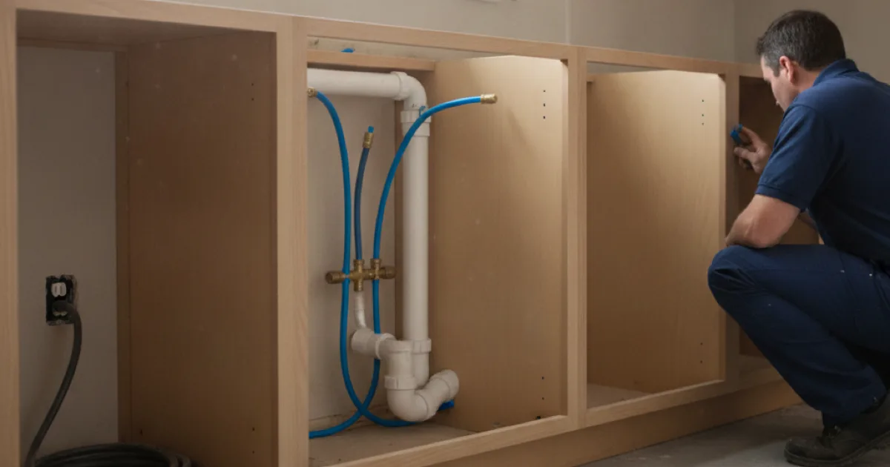

Kitchen Plumbing Remodeling in Westchester County, NY
A kitchen remodel lives or dies on the plumbing behind it. Dan's Drains handles the sink, dishwasher, and supply and drain lines that make your new kitchen work — and last.
- Licensed & Insured
- Same-Day Service Available
- Upfront Pricing
- 15+ Years Local Experience

Need a plumber in Westchester County? We can usually help the same day.
What Kitchen Remodel Plumbing Covers
Kitchen plumbing includes the sink, faucet, dishwasher, disposal, and sometimes a pot filler or island fixture — plus the supply and drain lines behind them. We handle moving, adding, and connecting all of it.
That includes the final sink set and connected once the counters are in.
Planning the Plumbing First
If your remodel moves the sink or adds an island, the plumbing has to move with it — and that is easiest before the cabinets and floor go in. We like to plan the routing early so nothing stalls the project.
Island plumbing in particular needs careful venting, which is worth getting right up front.
Talk to a local Westchester County plumber today.
How We Handle the Work
We route the supply and drain lines to the new layout, set the rough-in, and connect the fixtures and appliances once finishes are in. We pressure-test everything and confirm the dishwasher and disposal drain cleanly.
We coordinate timing so the plumbing is ready exactly when the rest of the kitchen needs it.
Kitchen Remodels in Local Homes
Older kitchens here often have dated drain and supply lines that are worth updating while the walls and floor are open. We will point out what is worth doing while it is accessible.
For layout ideas, the Better Homes & Gardens kitchen remodeling ideas are a useful starting point, and we handle the plumbing behind them.
When to Call a Pro
Bring us in early if your remodel moves the sink, adds an island, or updates appliances. Planning the plumbing up front keeps the job on schedule.
We also connect the dishwasher and other appliance lines as part of the work.
Frequently Asked Questions
Can you move my kitchen sink to a new spot?
Often, yes, depending on where the drains and vents are. We review your layout and tell you honestly what the move involves.
Do you plumb kitchen islands?
Yes. Island sinks need careful drain and vent routing, which we plan and install so it drains properly.
When should I involve a plumber in a kitchen remodel?
Early, during planning. Moving lines is far easier before cabinets and flooring go in, and early planning avoids mid-project delays.
Do you connect the dishwasher and disposal?
Yes. We connect the dishwasher, disposal, and other appliance lines and confirm they drain cleanly and leak-free.
Should I update old kitchen pipe during the remodel?
If it is aging and the area is open, usually yes. We will tell you when it is worth doing and when it is fine to leave.
Ready to book? Reach Dan’s Drains for fast, upfront plumbing help.